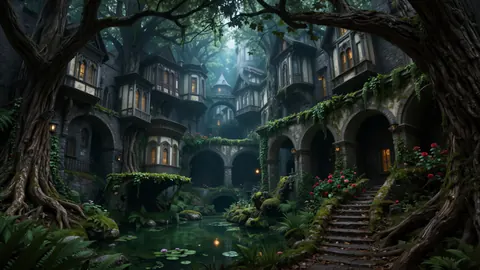
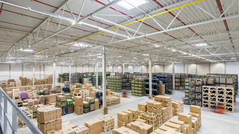
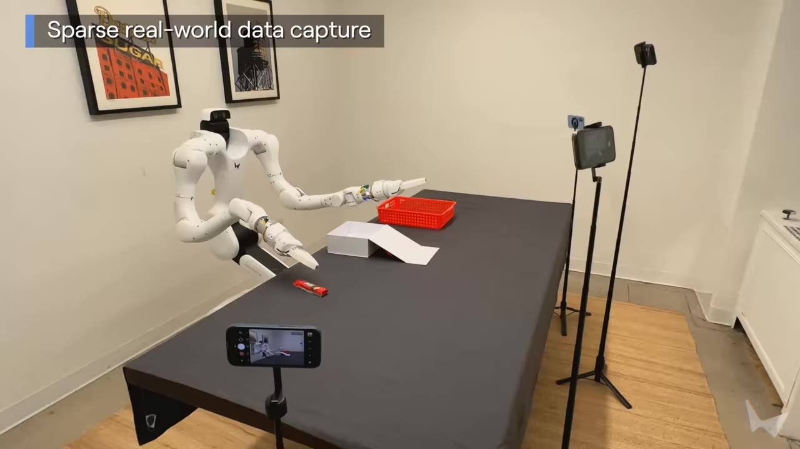

Atlas：架构与创新点详解
1模型概览
| 模型名称 | Atlas |
| 发布方 | World Labs（"空间智能"方向代表公司） |
| 发布时间 | 2026 年 9 月 1 日（官方博客） |
| 模型类型 | 全模态（Omni）世界模型，面向空间智能（Spatial Intelligence） |
| 架构 | 多模态自回归扩散 Transformer（multimodal autoregressive diffusion transformer） |
| 原生模态 | 文本、图像、相机位姿、3D 深度图（视频 = 图像序列） |
| 训练方式 | 从零预训练（pretrained from scratch），大规模多模态语料 |
| 核心机制 | 所有输入统一进入空间上下文（Spatial Context）——每张图像锚定在 3D 空间位置上 |
| 四大能力 | 相机控制生成（1440p / 最长 1 分钟）、稀疏视角 3D 重建、时空模拟（Real-to-Sim）、图像 / 360 全景生成 |
| 开放情况 | 早期访问制（early access，面向选定合作伙伴）；将驱动 Marble 后续版本 |
| 配套论文 | 暂无（博客提供 @article 引用格式） |
官方摘要（原文引用）：
"Today we are introducing Atlas, our next-generation world model. Atlas is an omni model that we pretrained from scratch to natively operate on text, images, video, and 3D. It is a multimodal autoregressive diffusion transformer: all inputs are combined into a shared spatial context. Atlas uses that context to generate what comes next, staying consistent in 3D with everything it has seen and imagining what lies beyond it. Atlas is built to scale: its performance improves with increased training compute, and we expect this trend to hold as we continue scaling."
2背景与定位
World Labs 对世界模型的定义：
"World models generate, reconstruct, and simulate any possible world. They understand how worlds appear, behave, and evolve — so that we can render imagined worlds for creative users, simulate the real world in high fidelity, and help robots plan actions."
Atlas 的定位是通用（general purpose）世界模型，一个模型覆盖三大类任务：
世界生成
从文本 / 图像生成想象中的新世界
世界重建
从稀疏真实观测重建真实世界（新视角合成 + 显式 3D）
世界模拟
建模世界随时间的演化，服务机器人规划与 Real-to-Sim
3核心架构：多模态自回归扩散 Transformer
官方明确表示，这需要同时跳出 LLM 与视频模型的标准架构，为"未来世界模型的基础架构"重新设计：
"These goals require us to depart from standard architectures used by both LLMs and video models, and design a new base architecture to serve as the foundation of future world models."
3.1 Multimodal（多模态）
"Atlas can natively process many different data types. At present it can operate on text, images, camera poses, and 3D depth maps; videos are represented as sequences of images. Each image and depth map is conditioned on an explicit camera pose, making spatial control a central component of the architecture."
3.2 Autoregressive（自回归）
"Atlas operates on sequences of elements, where each element is one of the multimodal data types above. Each output is generated one at a time, conditioned on earlier parts of the sequence. This flexible design naturally adapts to a wide variety of tasks: each task is just a different kind of sequence, where inputs are followed by outputs."
即：任务 = 序列构造方式。生成、重建、模拟等所有任务被统一成"输入元素 + 输出元素"的序列化形式，无需任务专属头或分支。
3.3 Diffusion（扩散）与 Transformer
"Atlas is a rectified flow model that generates outputs by gradually denoising them... can naturally trade off speed and quality by varying the number of denoising steps."
扩散（整流流）负责高维连续数据（图像 / 视频 / 深度）的高保真生成；Transformer 骨干以大矩阵乘为主、充分适配现代硬件。
3.4 两条技术路线的红利兼收（创新点）
"Like an LLM, it is an autoregressive transformer, so it can take advantage of innovations used to serve and accelerate LLMs including KV-caching, cache-aware routing, disaggregated serving, and more. Like a modern image or video model, it is a latent diffusion model and can make use of algorithms such as diffusion distillation, classifier-free guidance, shifted noise schedules, and advances in VAE design."
| 来源路线 | 继承的机制 |
|---|---|
| LLM 侧（自回归 Transformer） | KV-caching、cache-aware routing、disaggregated serving 等推理服务加速 |
| 视频/图像模型侧（latent diffusion） | 扩散蒸馏、classifier-free guidance、shifted noise schedules、VAE 设计进展 |
4核心概念：空间上下文（Spatial Context）
这是 Atlas 区别于 LLM 的最核心创新。官方类比：
"Similar to an LLM, Atlas first encodes its inputs into a context, then generates outputs conditioned on the context. However, Atlas is unique because each image is grounded at a 3D position in space; this forms a spatial context."
- LLM 的上下文是一串 token 的语义上下文；Atlas 的上下文是每个输入都被锚定在 3D 空间中的"空间上下文"；
- 输出生成时必须与上下文中"已见过的一切"保持 3D 一致，并对"视野之外"进行合理想象（"staying consistent in 3D with everything it has seen and imagining what lies beyond it"）；
- 空间上下文管理本身成为创作控制手段：可以把两张互不相关的参考图放进上下文并摆到 3D 空间中的指定位置，Atlas 会生成一个在两者之间平滑过渡的世界——官方演示中模型自行"想象"出门口、走廊、壁龛等过渡空间（"it imagines doorways, hallways, nooks, and other transitions between otherwise unrelated image pairs"）；
- 长视频生成 = 相机运动 + 空间上下文管理的组合：用户手工设计穿越场景的相机路径（"director's chair"——"you are staging the scene, not pulling the lever of a slot machine"），即可用少量参考图生成 1 分钟 1440p 连贯视频。
5四大能力
5.1 相机控制生成（Camera-Controlled Generation）
- 输入 1–6 张参考图 + 手工设计的相机路径，逐帧生成新视角；
- 像素级相机控制（pixel-perfect camera control）："going beyond coarse text-based instructions"——每个机位、每个运动都可控；
- 单张图即可生成完整场景：结合输入图内容与广泛的世界知识推断未见视角；
- 输出上限：最长 1 分钟、1440p 分辨率；
- 覆盖宽泛的场景类型、视觉风格与相机运动。
5.2 空间重建（Spatial Reconstruction）
官方定位——用世界模型解决 3D 视觉的"老大难"问题：
"We believe Atlas is a major step forward toward solving the problem of novel view synthesis from sparse input images, a decades-old fundamental problem in 3D computer vision."
- 可变输入视角数：从 1 张到上百张（"Atlas can also make use of over a hundred input images in its spatial context"）；
- "看得越多，想象越少"："the more it sees, the less it imagines"——2–3 张图通常就能给出忠实重建；
- 官方演示"逐图累加"案例：单张地面照片 → 鸟瞰（花园准确、其余想象）；+第二张（小屋）→ 花园+小屋准确、左侧仍想象；+第三张（主屋）→ 整个场景准确。另一案例用 2–25 张地面照片重建斯坦福 Main Quad，并能生成高空航拍路径；
- 同场景多路径：同一小组输入图可生成任意多条相机轨迹（速度、长度、复杂度可变），"No matter how many times you change the camera path, the scene stays consistent"；
- 显式 3D 输出：原生同时处理 2D 帧与 3D 深度图，可输出点云或 3D Gaussian Splats——单图输入时联合生成新视角 + 估计几何；真实视频输入时逐帧预测深度并融合成 3D 重建；"Atlas fills in regions that no camera ever saw"；
- 点云 → 完整 splat 场景：可在设备端高分辨率、高帧率渲染——与 Marble 使用同一表示，天然接入自家产品生态。


5.3 时空模拟（Space-Time Simulation）
Atlas 作为世界模拟器："It understands both the spatial structure of the world and how the world evolves over time."
（1）子弹时间视频重构图（Bullet-Time Reframing）
"Atlas turns a handful of ordinary cameras into a 'bullet time' multiview capture studio. With footage from as few as three cameras, Atlas can freeze time and reframe shots, letting you view events from impossible angles."
- 仅需 3–5 个普通手机 / 运动相机机位，即可冻结时间、从任意"不可能的角度"重构画面——无需专业摄影团队或专用采集设备（官方演示由工程师用能装进背包的三脚架+夹具拍摄）；
- 流程：先从 3–5 个视角重建场景，再自由重新取景（reframe）。
（2）机器人 Real-to-Sim
- 导航仿真：手机视频取 24 帧即可重建大型环境（传统方式需要昂贵专业设备），然后模拟不同机器人在不同路径上导航，由 Atlas 生成机体相机视角的 RGB 与深度数据——"The world and the robot's view of it come from the same model"（世界与机器人视角同源，天然一致）；
- 操作仿真（manipulation）：从少量随手拍摄出发构建仿真，可复现刚性、铰接（articulated）、可变形（deformable）物体的物理交互；任务仿真化后可任意变换（物体、位置、机器人运动、光照、背景）——"The result is diverse training data and testing environments for robotics at scale"。

5.4 图像生成（Image Generation）
"Though image generation is not its primary focus, Atlas is a capable image generator: it follows complex prompts, renders text, and generates a wide variety of visual styles. Atlas also generates 360 images from text or image prompts."
图像生成不是主目标（"every image is a window to a possible world"），但作为统一模型的自带能力，支持复杂提示词、文字渲染、多风格，以及文本 / 图像生成 360° 全景。
6评测结果
官方强调 Atlas 是执行多任务的全模态模型，"no single benchmark that fully captures its generality"，因此只定量评测了两个关键任务。
6.1 相机控制生成（人评）
- 协议：单张输入图 + 1–3 段电影级相机运动（pan、truck、crane 等）组成目标相机路径；Atlas 用原生相机输入格式，其他模型（不支持相机原生输入）用标准电影术语的文本描述；第三方人类评分者判断谁更好地遵循相机路径；
- 结果（选择 Atlas 的投票占比，均大幅领先）：
| 对比基线 | Atlas 获偏好率 |
|---|---|
| MiniMax H3 | 75% |
| Gemini Omni Flash | 81% |
| Happy Horse 1.1 | 86% |
| FLUX 3 | 93% |
| Seedance 2.5 | 94% |
"These results confirm that Atlas outperforms recent video models at camera-controlled generation, and this advantage grows as camera trajectories become more complex."
6.2 稀疏视角 3D 重建
- 协议：输入一组图像 + 相机位姿，为每个输入像素预测对应 3D 点（pointmap）；指标为各数据集的 mean absolute-relative pointmap error（AbsRel ×10⁻³，越低越好）；所有基线结果均为官方复现以保证公平协议；
- 基线：5 个近年专门的重建模型——Pi3X (posed)、π³、VGGT-Ω 1B、Depth Anything 3、MapAnything。
| Benchmark | Atlas (Ours) | Pi3X (posed) | π³ | VGGT-Ω 1B | Depth Anything 3 | MapAnything |
|---|---|---|---|---|---|---|
| Average | 25.3 | 28.7 | 34.7 | 36.4 | 39.3 | 47.7 |
| DTU | 8.6 | 11.1 | 16.2 | 9.7 | 11.9 | 18.2 |
| ETH3D | 9.3 | 18.7 | 25.4 | 11.4 | 23.8 | 34.8 |
| KITTI | 60.0 | 60.2 | 74.8 | 101.4 | 93.3 | 115.3 |
| NRGBD | 6.5 | 13.3 | 17.5 | 10.5 | 11.3 | 20.2 |
| 7-Scenes | 37.8 | 39.3 | 44.4 | 45.2 | 50.8 | 47.4 |
| T&T | 42.4 | 42.4 | 47.0 | 40.2 | 55.1 | 60.8 |
| ScanNet | 12.4 | 15.7 | 17.4 | 36.6 | 29.0 | 37.0 |
"Despite its generality, Atlas outperforms the best specialized open-source reconstruction models."
7模型缩放
"Most progress in modern AI has been driven by scaling... We see strong evidence that Atlas will continue to improve with scale. We pretrained Atlas from scratch on a large diverse corpus of multimodal data. Over the course of development, we trained a series of models of increasing size and training compute, and found that each new level of compute unlocked new model capabilities."
- Atlas 从零预训练于大规模多样化多模态语料（未披露数据构成与规模）；
- 开发过程中训练了一系列递增规模的模型，每提高一档算力都解锁了新能力（类似 LLM 的涌现式叙事）；
- 官方明确押注缩放曲线将持续："We are confident that our future world models will follow this trend, dramatically improving their capabilities as we continue to scale."
8产品化与开放情况
- 早期访问（early access）：邀请制向选定合作伙伴开放（官方提供 申请表单），定位 "the go-to world model for generating, reconstructing, and simulating any world"；
- Marble 集成：Atlas 将驱动 Marble 的未来版本；其 splat 输出表示与 Marble 一致，可自然融入现有产品与渲染管线；
- 发布形式：官方博客发布（含完整引用格式
@article{worldlabs2026atlas, ...}），暂无论文、无开源权重、无 API 价格信息。
9已知局限
- 无技术论文：架构只有博客级描述——未披露参数量、训练数据构成、推理成本、模型变体等细节；
- 模态范围带 "at present" 限定：当前原生输入为文本、图像、相机位姿、3D 深度图（视频 = 图像序列），音频等模态未提及；
- 长视频生成依赖手工相机路径：1 分钟 1440p 演示采用 "hand-design a camera path"，可控性以人工设计成本换取；
- 重建与想象的边界：输入稀疏时模型会"想象"未见区域（官方也坦承 "sometimes you do not want imagination"），需要更多输入图压制幻觉；
- 早期访问制：暂无公开可用渠道，第三方无法独立复现其基准结果。
10参考资料
- 官方博客：Atlas: A World Model for Spatial Intelligence（2026-09-01）
- 相关博客：Real-to-Sim-to-Real（机器人 R2S2R 工作流）
- 产品：Marble（World Labs 的世界生成产品，Atlas 将驱动其后续版本）
- 引用格式：
@article{worldlabs2026atlas,
author = {World Labs Team},
title = {Atlas: A World Model for Spatial Intelligence},
journal = {World Labs Blog},
year = {2026},
note = {https://www.worldlabs.ai/blog/atlas},
}